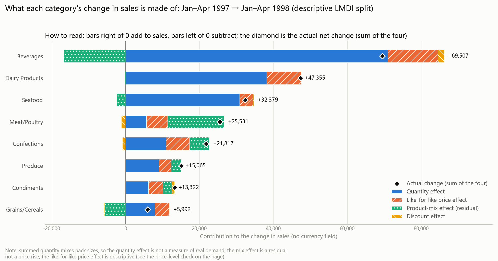
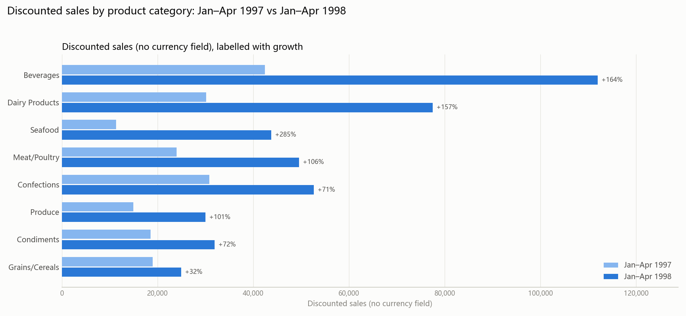
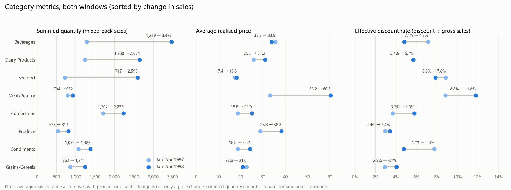

Q4 · What drives each category's sales change?
Short answer
Across categories, most of the +230,968 change goes with the quantity effect (+181,916). Every category shows a positive like-for-like price term, of different sizes (+3,280 to +13,506; +50,082 for the company split). This is a descriptive result, alongside an observed price-level step in early April 1997 — not a proven policy or causal contribution. Dairy Products and Seafood grew broadly across products without deeper discounts; Meat/Poultry's higher average price is mainly product mix.
Next step: treat Dairy Products and Seafood as candidates to promote; look into Meat/Poultry, Confections and Grains/Cereals before acting, because their changes rest on one or two products or on rising discounts.
Why it matters
Growth that goes with more units sold calls for a different response than growth that goes with price or with selling more expensive items. Separating them shows which categories grew broadly and which rest on one product, a price step or discounts and need a closer look before more promotion money goes in.
Method
Data and period: January–April 1997 vs January–April 1998 by order date. Grain and joins: order lines joined to Orders (OrderID), Product (ProductID) and Categories (CategoryID), using the price actually charged on each line (Orders Details.UnitPrice).
A category's sales equal quantity × average price × (1 − discount), so the change can be split into four parts: more or fewer units (quantity), the same products costing more or less (like-for-like price), a shift toward cheaper or dearer products (product mix, the residual), and deeper or shallower discounts. The four parts add up exactly to the actual change of each category.
Formulas, definitions and analysis choices
S = Q × P × (1 − d) Q = Σ Quantity (mixed units), P = Σ UnitPrice×Quantity / Q, d = discount amount / gross sales w = (S1 − S0) / (ln S1 − ln S0) (log-mean weight, LMDI-I) ΔS = w·ln(Q1/Q0) + w·ln(P1/P0) + w·ln((1−d1)/(1−d0)) w·ln(P1/P0) = w·ln(Fisher) + w·[ln(P1/P0) − ln(Fisher)] (like-for-like + mix residual) Fisher = √(Laspeyres × Paasche) over products sold in both windowsPrices come from Orders Details.UnitPrice, never Product.Price or NewPrice. The largest absolute residual of the four-part split is 5.8e-11.
34 reconciliation checks, all passed (q4_validation.csv).
Evidence

The four effects by category
| Category | Quantity effect | Like-for-like price | Product mix (residual) | Discount | Actual change |
|---|---|---|---|---|---|
| Beverages | +71,050 | +13,506 | -16,815 | +1,766 | +69,507 |
| Dairy Products | +38,252 | +9,303 | -219 | +19 | +47,355 |
| Seafood | +30,912 | +3,605 | -2,402 | +263 | +32,379 |
| Meat/Poultry | +5,649 | +5,791 | +15,255 | -1,165 | +25,531 |
| Confections | +10,958 | +6,405 | +5,349 | -896 | +21,817 |
| Produce | +9,047 | +3,280 | +2,845 | -107 | +15,065 |
| Condiments | +6,234 | +3,898 | +2,407 | +782 | +13,322 |
| Grains/Cereals | +7,949 | +3,978 | -5,672 | -262 | +5,992 |
| All categories (separate company-level split) | +181,916 | +50,082 | -688 | -342 | +230,968 |
The last row is a separate split of company totals, not the sum of the rows above: only “Actual change” adds up down the column (for example, the category quantity effects sum to +180,053, not +181,916).
Price-level check behind the like-for-like price effect
| Check | Result |
|---|---|
| Lines / products in the 1997 window | 322 / 74 |
| Comparable with a 1998 price | 321 / 73 |
| Ordered on or before 1997-04-04 | 254 lines / 69 products |
| …of which at 0.78–0.82 × the 1998 price | 254 lines (no exceptions) |
| Ordered from 1997-04-07 | 67 lines / 47 products |
| …of which at 0.99–1.01 × the 1998 price | 67 lines (no exceptions) |
| Products with more than one price in 1998 | 0 |
Findings
- Of the +230,968 increase, the quantity effect is +181,916 (78.8% of the increase) and the like-for-like price effect +50,082 (21.7%); mix and discount are small overall. These are shares of the sales increase, not percentage points of growth.
- The like-for-like price index is 1.16–1.21 in every category. In the data, every comparable line ordered up to 1997-04-04 was priced at about 0.8× the product's 1998 price and every later one at the 1998 price. That is an observed pattern, not a documented price policy, and it is not specific to any category.
- Meat/Poultry's average price jump (33 → 60) is mainly associated with a shift in product mix (mix effect +15,255, 60% of its change), with like-for-like price changes also contributing (+5,791, 23%). One product (Thüringer Rostbratwurst) explains 92% of the change; its effective discount rose 3.0 pp.
- Dairy Products and Seafood grew broadly (10/0 and 11/1 products up/down), mainly through the quantity effect, and their discount rates did not rise.
- Beverages had the largest increase (+69,507); quantity grew mostly in cheaper drinks (mix -16,815), while Côte de Blaye explains 55% of the change. Grains/Cereals grew least (+31.6%).
- Confections' effective discount rose 2.1 pp and about half its change comes from one product.
Business interpretation and next steps
- Candidates to promote: Dairy Products and Seafood (broad growth across products, mainly through quantity, without deeper discounts). Beverages too, looking separately at cheap-drink volume and Côte de Blaye.
- Investigate before acting: Meat/Poultry (one high-price product and rising discount), Grains/Cereals (Gnocchi decline), Confections (rising discount, one product), Produce and Condiments (several products declining). Pack-size data would help turn the quantity effect into real volume.
These are candidate directions for further evaluation, not decisions the data can settle on its own.
Limitations and boundaries
- Summed quantity adds different pack sizes; the quantity effect is not a physical volume or a measure of real demand growth.
- The mix effect is a residual that also contains products sold in only one window.
- LMDI splits describe the arithmetic; other split methods give somewhat different numbers; nothing here is causal.
- Four-month windows; some categories depend on one or two products. Sales are not profit.
Supplementary material and downloads
Supplementary charts and tables

Sales, quantity, price and discount by category
| Category | Sales 1997 | Sales 1998 | Change | Growth | Quantity (mixed units) | Avg realised price | Effective discount |
|---|---|---|---|---|---|---|---|
| Beverages | 42,461.23 | 111,968.17 | +69,506.94 | +163.7% | 1,289 → 3,473 | 35.47 → 33.87 | 7.13% → 4.81% |
| Dairy Products | 30,155.74 | 77,511.07 | +47,355.34 | +157.0% | 1,238 → 2,654 | 25.83 → 30.96 | 5.70% → 5.67% |
| Seafood | 11,354.44 | 43,733.04 | +32,378.60 | +285.2% | 717 → 2,598 | 17.37 → 18.26 | 8.84% → 7.83% |
| Meat/Poultry | 24,015.79 | 49,546.74 | +25,530.95 | +106.3% | 794 → 932 | 33.17 → 60.26 | 8.81% → 11.78% |
| Confections | 30,855.53 | 52,672.50 | +21,816.97 | +70.7% | 1,707 → 2,233 | 18.77 → 25.03 | 3.68% → 5.77% |
| Produce | 14,955.18 | 30,020.65 | +15,065.47 | +100.7% | 535 → 813 | 28.80 → 38.23 | 2.94% → 3.42% |
| Condiments | 18,570.47 | 31,892.21 | +13,321.74 | +71.7% | 1,073 → 1,382 | 18.76 → 24.23 | 7.73% → 4.75% |
| Grains/Cereals | 18,953.50 | 24,945.84 | +5,992.34 | +31.6% | 862 → 1,241 | 22.64 → 20.95 | 2.90% → 4.06% |
| All | 191,321.88 | 422,290.24 | +230,968.36 | +120.7% | 8,215 → 15,326 | 24.78 → 29.35 | 6.02% → 6.13% |

How widely each category's change is spread across products
| Category | Products up / down | Largest mover (share of change) |
|---|---|---|
| Beverages | 12 / 0 | Côte de Blaye (55%) |
| Dairy Products | 10 / 0 | Raclette Courdavault (28%) |
| Seafood | 11 / 1 | Ikura (22%) |
| Meat/Poultry | 4 / 2 | Thüringer Rostbratwurst (92%) |
| Confections | 10 / 3 | Tarte au sucre (53%) |
| Produce | 2 / 3 | Uncle Bob's Organic Dried Pears (63%) |
| Condiments | 8 / 4 | Grandma's Boysenberry Spread (26%) |
| Grains/Cereals | 6 / 1 | Gnocchi di nonna Alice (-87%) |
Products sold in only one window
| Category | Product | Sold in | Sales change |
|---|---|---|---|
| Condiments | Louisiana Hot Spiced Okra | 1997 window only | -1,632.00 |
| Condiments | Genen Shouyu | 1997 window only | -176.70 |
| Condiments | Chef Anton's Gumbo Mix | 1998 window only | +3,042.38 |
| Condiments | Grandma's Boysenberry Spread | 1998 window only | +3,517.50 |
| Produce | Tofu | 1997 window only | -3,059.70 |
| Seafood | Escargots de Bourgogne | 1998 window only | +2,427.40 |
Download the full result tables (CSV)
- q4_category_comparison.csv — Category table and decomposition, rounded
- q4_category_raw_precision.csv — Category table and decomposition, full precision
- q4_price_level_check.csv — Share of lines below the 1998 price level
- q4_price_level_coverage.csv — Coverage of the price-level comparison
- q4_price_level_exceptions.csv — Lines not matching the price pattern (empty)
- q4_product_detail.csv — Per-product quantities, prices and sales
- q4_validation.csv — Reconciliation checks (expected, actual, pass)
CSV files are UTF-8 with BOM; some headers are in Chinese.